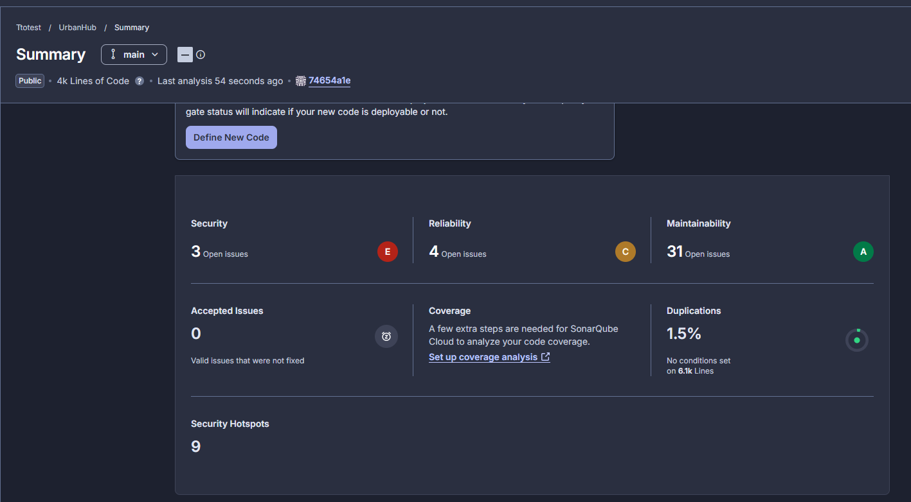
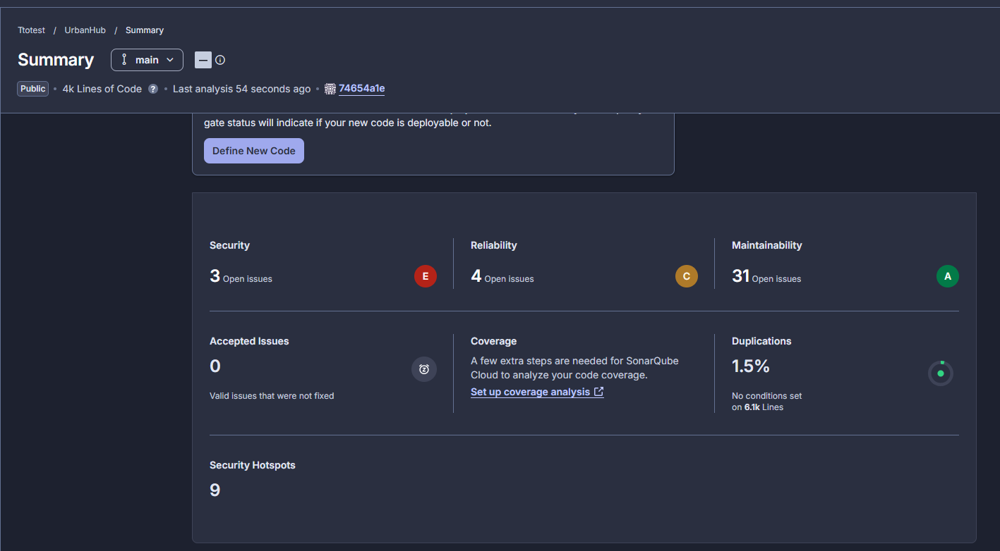

EC03 Partie 1 - UrbanHub - MS6 Validateur de donnees capteur
Numero etudiant : MI202627 | Session avril 2026 | Branche : feature/ms6-validateur-ec03
1. Captures SonarCloud AVANT / APRES
AVANT corrections

APRES corrections

2. Metriques SonarCloud comparees
| Metrique | AVANT | APRES | Delta |
|---|
| Bugs | __ | __ | __ |
| Vulnerabilities | __ | __ | __ |
| Security Hotspots | __ | __ | __ |
| Code Smells | __ | __ | __ |
| Technical Debt | __ min | __ min | __ |
| Coverage | __ % | __ % | __ |
| Duplications | __ % | __ % | __ |
| Quality Gate | __ | __ | __ |
3. Tableau Snyk - vulnerabilites CVE
| CVE | Gravite | Package | Version vulnerable | Version corrigee | Action appliquee |
|---|
| __a remplir__ |
MEDIUM |
__ | __ | __ | upgrade dans requirements.txt |
| __a remplir__ |
LOW |
__ | __ | __ | dette acceptee (justification page 2) |
Page 2 - Analyse SonarCloud High & Critical + bilan
4. Balises SonarCloud HIGH / CRITICAL traitees
| Severite |
Nom de la regle |
Fichier:ligne |
Cause dans le code |
Correction OU dette justifiee |
| HIGH |
python:SXXXX - exemple : "Function is too complex" |
src/__.py:__ |
__a remplir apres lecture du dashboard__ |
Refactor en deux fonctions (classify_value extraite de validate_sensor_data) - commit __sha__ |
| CRITICAL |
python:SXXXX |
src/__.py:__ |
__ |
__ |
| HIGH |
python:SXXXX |
src/__.py:__ |
__ |
Dette acceptee : __justification courte__ (a traiter en BC03 LC2). |
5. Vulnerabilites Snyk traitees vs residuelles
| Vulnerabilites HIGH/CRITICAL avant | Traitees | Residuelles | Justification residuelles |
|---|
| __N__ | __N-1__ | __1__ | Pas de version corrigee disponible compatible Python 3.11 - dette acceptee. |
6. Bilan
| Indicateur | Avant | Apres |
|---|
| Alertes Sonar (toutes severites) | __ | __ |
| Alertes Sonar HIGH + CRITICAL | __ | __ |
| CVE Snyk HIGH + CRITICAL | __ | __ |
| Violations flake8 | __ | __ |
| Couverture pytest | __ % | __ % |
| Quality Gate Sonar | __ | PASSED |
7. Conclusion
Le microservice ms6-validateur-capteur repond aux exigences fonctionnelles
EX-ENV-02, EX-ENV-03 et EX-INC-02 du BC01.
Le pipeline GitHub Actions est conforme au CDC BC03 (5 etapes test -> quality -> build -> deploy-staging,
SonarCloud + Snyk obligatoires dans le job quality, image poussee sur ghcr.io,
deploy-staging via docker-compose avec healthcheck curl /docs).
La couverture pytest est superieure au seuil obligatoire de 80 %.
La dette technique residuelle est documentee et justifiee.